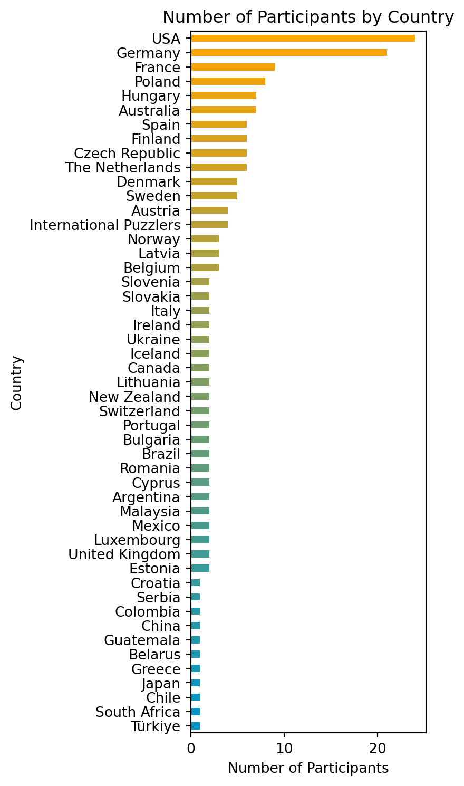
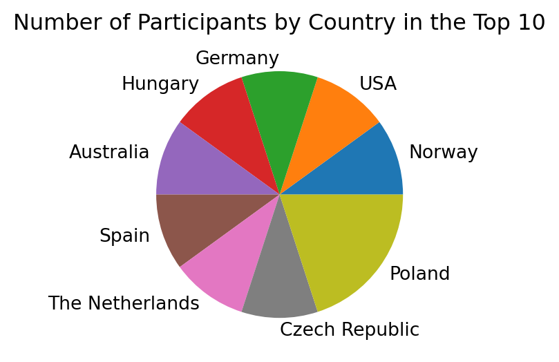
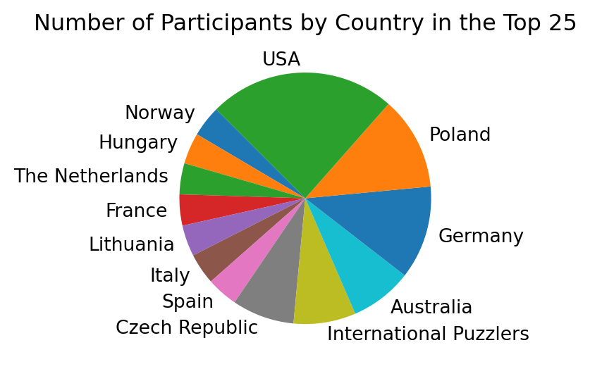
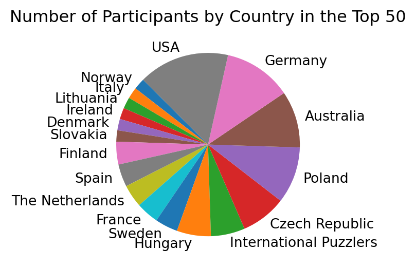

import matplotlib.pyplot as plt
import pandas as pd
from itables import show
from result_stats import ResultStats
df = pd.read_csv("data/wjpc_2024_individual_final.csv",
index_col=0
)
df = df.rename(columns={"#": "Place"})
df = df.set_index('Place')
df = df[['Name', 'Time', 'Country', 'Origin']]
res = ResultStats(df)World Jigsaw Puzzle Championships 2024 Results
Home
Column - Overview
Row - Fun Facts
dict(
icon = "person",
value = len(res.df)
){'icon': 'person', 'value': 180}Row - Fun Facts
dict(
icon = "clock",
value = res.avg_time
){'icon': 'clock', 'value': '00:56:08'}Row - Fun Facts
dict(
icon="globe",
value = res.n_countries
){'icon': 'globe', 'value': 49}Column
show(res.df, columnDefs=[{"className": "dt-center", "targets": "_all"}])| Name | Time | Country | Origin | |
|---|---|---|---|---|
| Place | ||||
|
Loading ITables v2.2.1 from the internet...
(need help?) |
General Stats
Column - Participants by Country
n_participants = res.df["Country"].value_counts().sort_values(ascending=True)
n_participants.plot(kind="barh", figsize=(3,9),
color=res.get_color_gradient(len(n_participants)),
title='Number of Participants by Country',
xlabel='Number of Participants')
plt.show()
Column
Row - Top N Finishers by Country
n_participants = res.df[:10]["Country"].value_counts().sort_values(ascending=True)
n_participants.plot(kind="pie", figsize=(3,6),
title='Number of Participants by Country in the Top 10', ylabel="")
plt.show()
n_participants = res.df[:25]["Country"].value_counts().sort_values(ascending=True)
n_participants.plot(kind="pie", figsize=(3,6),
title='Number of Participants by Country in the Top 25', ylabel="", startangle=135)
plt.show()
n_participants = res.df[:50]["Country"].value_counts().sort_values(ascending=True)
n_participants.plot(kind="pie", figsize=(3,6),
title='Number of Participants by Country in the Top 50', ylabel="", startangle=135)
plt.show()
Row
dict(
icon="clock",
value = res.get_faster_than_1_hr()
){'icon': 'clock', 'value': 113}